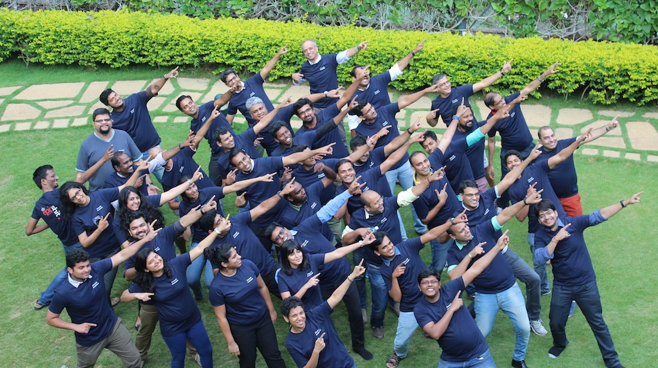

The ninth batch of startups chosen for the Microsoft Accelerator in Bangalore has a distinct theme of AI and data analytics. This aligns with Microsoft’s strategic push to be an AI platform coupled with its Azure cloud computing platform.
“We are at the cusp of a new era where everything is about intelligence. It’s no longer about automation, it’s about tons and tons of data and what we do with it… Give it another ten years, I think artificial intelligence and data analytics will be in the DNA of every company,” Bala Girisaballa, who recently took charge as CEO of Microsoft Accelerator in Bangalore, tellsTech in Asia‘s Sumit Chakraberty in a detailed interview to be published later this week.
“I don’t think any company can be outside of this realm. This to me is a fundamental shift, and not just another vertical. It’s changing the sinew or fabric or DNA of every organization,” says Bala, explaining the AI and data analytics focus in this cohort.
Another striking feature of this cohort is its maturity. The average age of the chosen startups is four-and-a-half years. They are all later stage startups with a proven product-market fit that Microsoft Accelerator believes can make the most of its go-to-market and mentoring support.
Nine of the 13 startups have already received funding, with five of them having raised series A. The remaining four bootstrapped startups have as much traction as the rest of the cohort. More than half the startups have an international presence already.
This is the most mature batch yet at the Microsoft Accelerator in Bangalore, which recently shifted its focus in the ecosystem to startups best placed to take advantage of the four-month program which takes no equity from the participants.
Here are the “lucky” 13 in the latest batch of Microsoft Accelerator, Bangalore.

Faircent
Faircent is a peer-to-peer lending platform. With analytics coupled with new parameters for assessing credit-worthiness, it can reduce the cost of loans for borrowers while at the same time providing more business to lenders. It is leveraging a loosening of regulations and new enablers like the unified payment interface to fill the gaping holes left by traditional banks in the lending scene.
Uncanny Vision
Uncanny Vision provides AI-based computer vision for smart IoT devices like surveillance cameras. Its UncannyCV product can speed up image processing by 2x to 20x in mobile apps using computer vision. Its second product UncannyDL has a deep learning library for mobile and embedded apps. The startup already has Fortune 500 customers in the US and Japan.
Whodat
Whodat is an AR (augmented reality) startup helping consumers on mobile devices visualize products like chairs and lamps in different settings. Right now it works only on iOS but Android support is expected to be added shortly.
Talview
Talview is an HR startup which has a suite for video interviews and assessment of job candidates. It also uses machine learning and data analytics to find good matches. Its app works on both iOS and Android mobile devices.
Transaction Analysts
Transaction Analysts is a fintech startup that wants to be a one stop shop for a range of digital payments in partnership with entrepreneurs. It aims to leverage the new unified payment interface approved by India’s central bank and the government’s Aadhar 12-digit unique identity for every citizen in India.
Surukam
Surukam is an AI startup using natural language processing and machine learning in areas like drafting legal contracts and managing social media engagement. Its premise is that AI can shrink the time spent in legal documentation, social media, and other areas.
MoveInSync
MoveInSync is a logistics startup that helps companies with employee transportation. It uses algorithms to optimize routes, enhance safety, and cut costs. Real time vehicle tracking and the electronic trip sheets help in efficient management. It is already in use by 40 enterprises including Microsoft, Google, and Amazon.
Allizhealth
Allizhealth is a healthtech startup that uses analytics to predict lifestyle-related health problems at the individual level as well as for a specific population. Its health risk assessment is also being used by insurance and health care providers.
Betaout
Betaout is a data analytics startup providing ecommerce companies with an all-in-one marketing software. This ranges from analyzing visitors and building user personas to personalized multi-channel engagement.
Epictions
Epictions is a data analytics startup that aims to use artificial intelligence and machine learning to disrupt content marketing and digital PR. It wants to help brands create engaging content consistently and target it at the right audience.
FarEye
FarEye is an analytics startup in the logistics space. Its software-as-a-service product enables the use of mobile devices for things like real time coordination between field jobs and on-demand consumer requests. Thus it enables businesses to optimize their operations on a mobile platform.
Germin8
Germin8 is a data analytics startup providing social metrics. It listens to conversations in real time in public as well as private forums to derive actionable insights and leads for brands and organizations.
Meddiff Technologies
Meddiff Technologies is a healthtech startup providing tele-imaging and tele-radiology. This widens the reach of hospitals and diagnostic centers, and addresses the lack of healthcare facilities in many areas. Its product has received accreditation from the US FDA.
You can read more coverage here:
https://www.techinasia.com/ai-recurring-theme-with-microsoft-accelerator-batch-13-startups
https://inc42.com/buzz/microsoft-accelerator-programme/
http://bwdisrupt.businessworld.in/tags/Microsoft-Accelerator-Programme-63775/?page=1